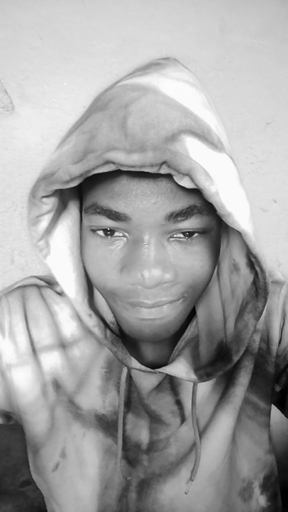

Based in Lagos, Nigeria
From moving packages to moving pixels.
I'm Daniel, a computer science student and frontend developer. I build fast, friendly websites, and I'm learning to turn data into decisions.
0live websites shipped
0short videos edited
0year in logistics operations

I built my employer's website on my own, then kept going.
I started in logistics, coordinating exports and answering customers on WhatsApp. Now I design in Figma, code in HTML, CSS and JavaScript, and edit short videos, and work as a virtual assistant, all while studying computer science.